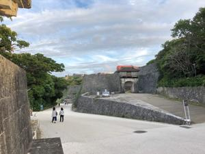
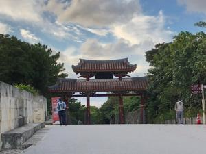
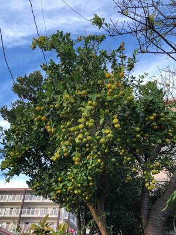
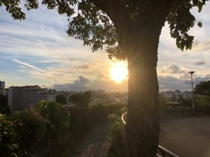

うるがいの話 ある日
最新: Aiうるがいとは 前提知識です
カニの画像をクリックすると『うるがいの話』サイトを表示します|
|
【うるがいの話】 うるがい(ｳﾙｶﾞｲ urugai)とは、『もずくがに』の名前でとても大きくなります。 |
|---|---|
|
|
【Got cat カミマヤーの話】 たながー（ﾀﾅｶﾞｰtanagaa）とは手長えびのことで、何種類かあり大きいのは車 エビぐらいになります。 |

|
【ぶながぁの話】 ぶながー(bunagaa)とは、赤い髪の毛、赤い身体、そして身長は１ｍ２０ｃｍ ぐらい、川の蟹を食べているの目撃された。場所は沖縄県国頭郡大宜味村のと ある村僕の隣近所に住んでいる爺さんから、聞いた話です。 |
|
|
【ギーマの話】 ギーマ(giima)とは、山原の里山に咲くスズランに似た、 花を付けます。実は食べられます、 気が付くと口の周りが紫になっています。 |
2021年11月16日 (火）Ai
17:34
   
この前、図書館から海堂 尊『ゴーゴーAi アカデミズム闘争4000日』という本
を借りた。ホー、医学でのＡＩの話かな面白いかも。読んだ、ん！、ＡＩでは
ない。
オートプシー・イメージング（Autopsy imaging、Ai）：狭義では死亡時画像
診断、広義では死亡時画像病理診断のことらしい。このネーミングを決める時
の事を本に書いてあったので
次なる問題は名称だ。AIは Artificial Intelligence(人工知能)の略と同じだから変えよという。
それならICは集積回路だがインフォームド・コンセントにも使うだろうに、とも思ったが、こんな ところで争っても仕方がないのでIを小文字にしてAiと表記することでしのいだ。とかく偉い先生と いうものは議論のための議論をしたがるものだ。用語問題はその後も他学会の偉い先生が思い出し たように持ち出す。ある病理医は学会などけしからん、研究会がお似合いだ、1という名称もよくな い、PMI (Postmortem Imaging)にしろと主張した。バカバカしい。大体、PMIという用語私が提唱したものだ。それなのに、PMIという用語があたかも昔からあるように言う病理医の姿は 私から見ると滑稽に映った。
面白い！。昨日人間ドックのエコー検査をしたとき、検査の人が何か気になる
事がありますか、と言うので「私は尿路結石が持病で、検査の度に腎臓に石が
あると言われます、今年の２月にも痛い重いをしました』、そして検査始まる
しばらくすると、左に５㎜程の石（でっかい）があります、ホウそうですか、
そして右側を検査・・、ありますここにも、３㎜程度のが、水飲んでいますか
、『理屈では分かっていますが・・・』、検査の終了でも水を飲んで下さい！
と言われた。ん、分かってはいるが、前の職場に２リットルのペットボトルの
水を置いて、帰るまでに空にしていたタチバさんみたいな事は・・・・。こう
して人間ドックの度に同じ葛藤をするのである。昨日は沖縄コロナ新規感染ゼ
ロ、1年4ヵ月ぶりとのこと。病院ではコロナ対策のため、待合室の椅子のアル
コール消毒などをしていた。病院へ入るとき、備えつけられた温度センサーで
３７度！、これは絶対におかしいと、おでこに別の測定器で測り直してもらう
と３６．５度だった。担当のオッサンやる気なかった。